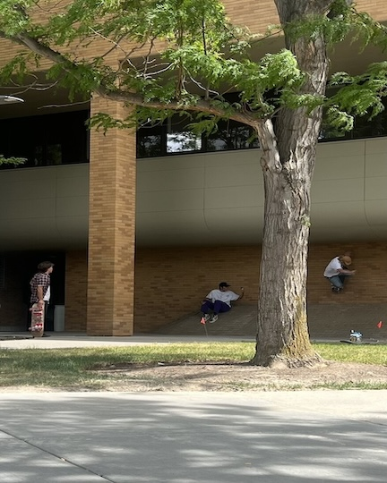
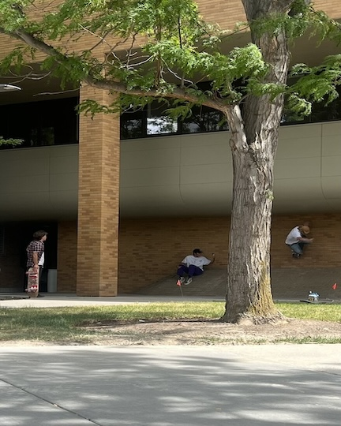

Online Skateboard Magazine
Information on all the up and coming skaters. Interviews, pictures, and videos of the skaters and all things skating.
purchase skateboarding mercha
My Audience
Skateboarders
Branding
Website Logo

Style Guide
Color Palette
| Primary | Secondary | Accent 1 | Accent 2 |
|---|---|---|---|
Typography
Heading Font: [bold fraktur]
Paragraph Font: [Fraktur]
The direction that skateboarding is headed...
Thrasher magazine has been skateboardings #1 magazine since the beginning and though they occasionally feature amatuer skateboarders they are few and far between. In the sport of surfing there are numerous magazines that highlight up and coming surfers but skateboarding has very few if any at all. Since the internet is the way of the future and magazines might become a thing of the past it seems as though there is an unfilled need for some new skateboarding magazines to take place. The same way that Thrasher sells their merchandise Foatch online magazine will sell our merchandise. Southern California has always been a hotspot for skateboarding since california is the birthplace of skateboarding. California will be the headquarters of Foatch since there will be a steady flow of new skaters available to photograph, video, and interview. There will be plenty to start off with there and since Foatch will be internet based it should be relatively easy to connect with skateboarders everywhere. As someone who has skated their whole life sometimes its harder to be motivated by strictly professional skateboarders. My friends and I have agreed that oftentimes amatuer content fells much more digestable. Professionals feel distant. Their tricks are so much harder and done on such a larger scale than almost the entire skateboarding community. Most skaters are not hitting big, hard tricks and skaters who are less talented relate more to skaters more like them. . Most skaters are also not super financially stable and so it will be beneficial for them to access this content for free. Much like Thrasher our videos will be sourced on youtube and so obviously they will be able to access the videos there as well but our website will immediately point skaters to the videos that they want to see. As the site develops we could even categorize videos by area and level of skating allowing people to see other skaters skating spots in their own city and skating at their level or whatever level they want to see. I feel that there are so many skaters out there with untapped potential just waiting to be noticed by the right demographic. I’ve seen it happen to me and my friends all the time. We meet people who skate with a similar style to us or at a near level or at spots that we like to skate and it gets us stoked and makes us want to skate harder and push each other. As our resources grow we wouldn’t just be featuring skaters and spots in southern California, we’d be featuring skaters and local spots everywhere. It could well become the website known for finding new spots and finding your new favorite skaters. Skaters spend a lot of their time searching for new creative spots and thinking of new tricks to try. With these new connections made so easily available skateboarding as a whole could elevate at an increasing pace.
Merchandise
As for the merchandise we sell graphic tees, sweatshirts, beanies, pants, shorts, shoes, decks and stickers all in skater fashion similar to Thrasher. In the earlier stages of Foatch skaters who put out a lot of good content will get a say in the potential graphics, somewhat like a sponsorship. This will motivate local skaters to send us more content and connect us more with the skate scene. When we first start we will put out more content from talented amatuers who are well connected in the skate scene so that Foatch gets a good reputation right off the bat and then from there trickle down to all levels of skateboarding all the way down to beginners.
Navigation
Site Map
Content
Home page
Thrasher magazine has been skateboardings #1 magazine since the beginning and though they occasionally feature amatuer skateboarders they are few and far between. In the sport of surfing there are numerous magazines that highlight up and coming surfers but skateboarding has very few if any at all. Since the internet is the way of the future and magazines might become a thing of the past it seems as though there is an unfilled need for some new skateboarding magazines to take place. The same way that Thrasher sells their merchandise Foatch online magazine will sell our merchandise.
Images for the Home page
 

Skateboarding content
Southern California has always been a hotspot for skateboarding since california is the birthplace of skateboarding. California will be the headquarters of Foatch since there will be a steady flow of new skaters available to photograph, video, and interview. There will be plenty to start off with there and since Foatch will be internet based it should be relatively easy to connect with skateboarders everywhere. As someone who has skated their whole life sometimes its harder to be motivated by strictly professional skateboarders. My friends and I have agreed that oftentimes amatuer content feels much more digestable. Professionals feel distant. Their tricks are so much harder and done on such a larger scale than almost the entire skateboarding community. Most skaters are not hitting big, hard tricks and skaters who are less talented relate more to skaters more like them. Most skaters are also not super financially stable and so it will be beneficial for them to access this content for free. Much like Thrasher our videos will be sourced on youtube and so obviously they will be able to access the videos there as well but our website will immediately point skaters to the videos that they want to see. As the site develops we could even categorize videos by area and level of skating allowing people to see other skaters skating spots in their own city and skating at their level or whatever level they want to see. I feel that there are so many skaters out there with untapped potential just waiting to be noticed by the right demographic. I’ve seen it happen to me and my friends all the time. We meet people who skate with a similar style to us or at a near level or at spots that we like to skate and it gets us stoked and makes us want to skate harder and push each other. As our resources grow we wouldn’t just be featuring skaters and spots in southern California, we’d be featuring skaters and local spots everywhere. It could well become the website known for finding new spots and finding your new favorite skaters. Skaters spend a lot of their time searching for new creative spots and thinking of new tricks to try. With these new connections made so easily available skateboarding as a whole could elevate at an increasing pace.
Images for the Page 2

Merchandise
As for the merchandise we sell graphic tees, sweatshirts, beanies, pants, shorts, shoes, decks and stickers all in skater fashion similar to Thrasher. In the earlier stages of Foatch skaters who put out a lot of good content will get a say in the potential graphics, somewhat like a sponsorship. This will motivate local skaters to send us more content and connect us more with the skate scene. When we first start we will put out more content from talented amatuers who are well connected in the skate scene so that Foatch gets a good reputation right off the bat and then from there trickle down to all levels of skateboarding all the way down to beginners.
Images for the Page 3

Wireframes
Create three wireframes for your site. One for each page and list them here
Home
I felt like this was the best format for the home page. The large image would be very eye catching and set the mood of the home page and the words could all be in the same place because there won't be more than one topic on the home page. Also here is the white water rafting page 2 wireframe.
Skateboarding Content
I felt like this was the best format of wireframe for page two since here we would be seeing the main content of the page and each picture (or possibly video) would need its own excerpt.
Merchandise
I felt like this was the best format for the Merchandise since each item needs to be easily distinguishable. Home, Skateboarding content, and Merchandise are all mean to be placeholders for text not links to each correspoding page. I realize how that might be confusing right now.